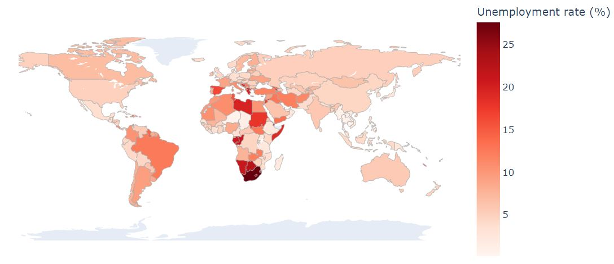

Minimum wages around the world
Jamaica's recent boost through a global lens
Jamaican Twitter got so vocal when the national minimum wage got set to 9000 JMD/week. Some persons call that amount an injustice. Others say unemployment will rise, and still some wonder if inflation will cancel it out. Let's take a fresh perspective and see what we can learn.
We're going to look at 1) what a minimum wage (theoretically) does, 2) why comparing them is tricky and 3) some reasons why the data and the theory might disagree.
What a minimum wage (theoretically) does
In economics, mimumum wages are a type of price floor, meaning what workers get paid should never fall below that. But think about it:
- More workers start looking for jobs since they'll pay more
- Less employers can afford to hire them since that's now more expensive
What happens when you have more job-seekers than jobs? Unemployment.
Aside: when the minimum wage is below the market's going wage rate, then it doesn't make a difference -- workers get paid the higher market wage anyway.
But this is what theoretically happens. The picture at the top shows hourly mimimum wages around the world in PPP $ (I took from Wikipedia out of curiosity). The one below shows the average unemployment rate over the last 5 years from the World Bank.
See a disconnect? Comparing minimum wages around the world is tricky.
Why comparing them is tricky
The same thing can have totally different prices depending on where you are in the world. So a comfortable salary in one place might be peanuts somewhere else. We use Purchasing Power Parity (PPP) to try and flatten out these differences by focusing on what money can buy, not just how much money there is. That's why the green map shows PPP$. We see Argentina is a huge outlier, since what their minimum wage can buy was set very high (their inflation rate is also very high, so that probably dampened its effect).
So sure, keeping a standard count on minimum wages is hard. What else explains the disconnect?
Some reasons why the data and the theory might disagree
- Poor data quality
Not all places have the same resources or care taken to collect accurate data. We can only tell the story that the data tells us, and if we hear something distorted, how could we know better?
- Sporadic, informal employment
To be unemployed, someone has to "not be working" AND "looking for work". Is someone working sporadically "not working"? It depends on which day you ask them. So even with great data collection, real-world data might not fit the template as well as some may like. This may explain a lot of the unemployment in sub-Saharan Africa, as can structural issues.
- Structural issues in the economy
Inefficiency of information can prevent job-seekers and potential employers from meeting each other. Requirements (like having a bank account and references) may exclude otherwise suitable workers. High inflation can stop a minimum wage from being binding (like in Argentina) and actually reduce unemployment.
Takeaways
So looking back, Jamaica's minimum wage increase might not offer a whole lot of extra purchasing power to the nation's most vulnerable. But at least we see that it's one drop in a very complex economic ocean, and the effects can be really hard to measure. Addressing structural issues may go a long way in bettering everyone's standard of living while fighting unemployment.
Here's the GitHub for the data processing and where these maps came from.